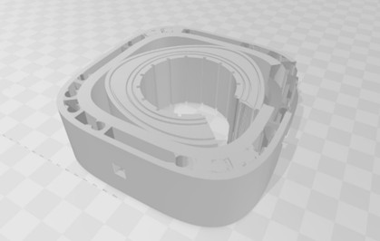

Edge AI computing on unmanned aerial vehicles (UAVs) faces a steep energy and thermal bottleneck. High-performance machine learning workloads—such as real-time computer vision, object classification, and sensor-fusion orchestration—are highly resource-intensive, pushing massive power demands onto edge hardware. Today, the main limiting factor is not the AI software, but the physical power source.
Lithium-ion batteries carry a severe energy density penalty, restricting edge AI drone missions to short operational windows (often under 45 minutes) and small payload capacities. When developers turn to hybrid internal combustion engines to act as range extenders, they face a new efficiency barrier. Conventional piston engines are limited by high sliding friction, complex reciprocating mass, and heavy valvetrains. Alternative high-RPM concepts eliminate physical seals but require extreme velocities up to 25,000 RPM, forcing a "gearing penalty" via heavy reduction gearboxes and creating a high-frequency acoustic whine that violates tactical stealth and residential noise ordinances. This physical weight and energy loss directly limits the size and continuous runtime of edge AI pipelines.

Translation-Ready Technology EmpowAI LLC resolves this physical power constraint with a proprietary, third-generation rotary engine designed specifically as a high-density, low-vibration hybrid range extender and auxiliary power unit (APU). Co-founded by systems architect Kirk Hsin and UC Berkeley materials scientist Tim Wei, our translation-ready technology discards legacy Wankel design limits.
By eliminating physical seals and utilizing AI-driven mathematical equations to map out zero-friction kinematic paths, our architecture features a highly simulated structural housing. This maintains precise, tight tolerances across volatile thermal cycles.
This allows our propulsion systems to drive high-speed edge generators and ducted fans directly, completely bypassing the reliability and weight penalties of traditional mechanical gear designs. The result is an optimized solution built for continuous runtime of edge AI pipelines on advanced UAV platforms.